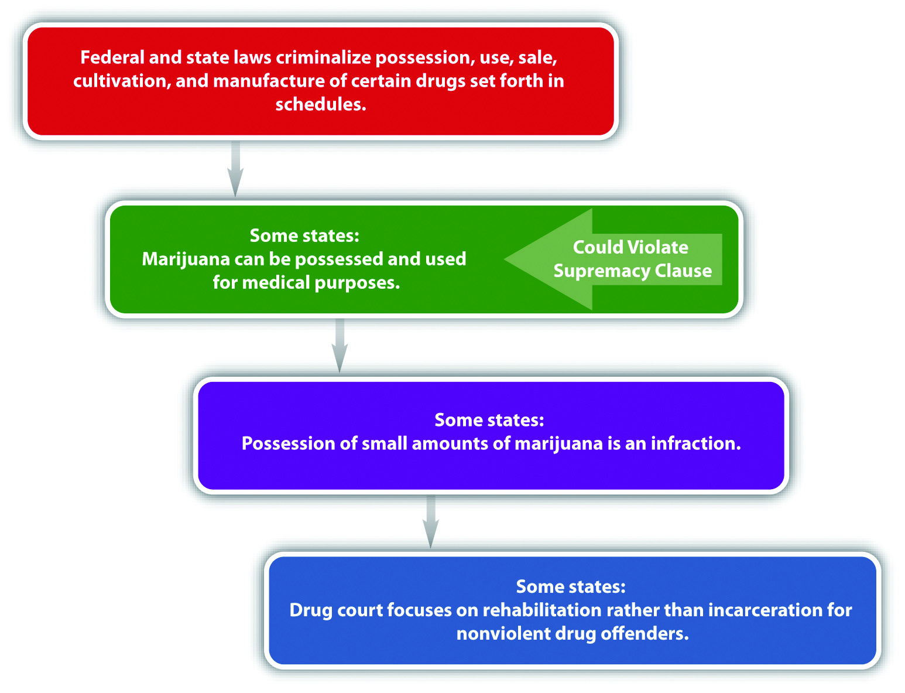
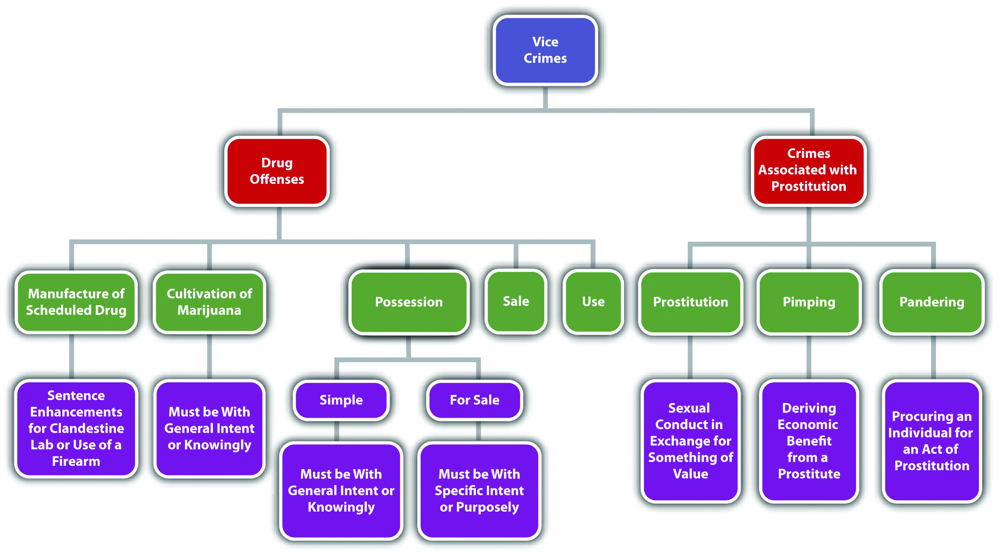

Vice crimes offend the sensibilities, yet are often victimless and harmless, other than harm done to the defendant or society in general. Section 12.3.1 "Drug Crimes" explores drug crimes, including manufacture or cultivation, possession, sale, and under the influence offenses. Upcoming sections analyze prostitution, pimping, and pandering. In the final section, various vice statutes are available for review, including statutes criminalizing gambling and conduct involving alcohol.
All states and the federal government criminalize the manufacture or cultivation, possession, sale, and use of specified drugs. Many modern statutes focus on rehabilitation for nonviolent drug offenders, rather than incarceration, because this has proven effective in reducing recidivism and freeing up jails and prisons for defendants who pose a greater security risk to society. In addition, marijuana, a drug that has demonstrated valid therapeutic qualities, has been legalized by many states for medicinal purposes, which poses interesting constitutional questions, as is discussed in Section 12 "Modernization of Drug Crimes Statutes".
Federal criminal statutes targeting illegal drugs are part of the Comprehensive Drug Abuse Prevention and Control Act of 1970, commonly known as the Controlled Substances ActThe federal statutory scheme criminalizing conduct involving specified drugs..21 U.S.C. § 801 et seq., accessed April 17, 2011, http://www.deadiversion.usdoj.gov/21cfr/21usc/index.html. The states follow one of the three versions of the Uniform Controlled Substances Act,Uniform Controlled Substances Act (1994), accessed April 17, 2011, http://www.law.upenn.edu/bll/archives/ulc/fnact99/1990s/ucsa94.pdf. which was drafted by a commission striving for uniformity in state and federal laws. For the purpose of drug crimes, the states and the federal government categorize illegal drugs in drug schedulesA federal or state statute categorizing illegal drugs based on their potential for addiction and harmful qualities..21 U.S.C. § 812, accessed April 17, 2011, http://www.law.cornell.edu/uscode/21/usc_sec_21_00000812----000-.html. The schedules generally focus on the harmful or addictive qualities of the drug, with Schedule I drugs being the most harmful or addictive; the remaining schedules reflect less harmful or addictive drugs, including drugs that are legal with a prescription.Minn. Stat. Ann. § 152.02, accessed April 17, 2011, https://www.revisor.mn.gov/statutes/?id=152.02 (accessed April 17, 2011).
The North Carolina drug schedule is located in N.C. Gen. Stat. § 90-89-90-94.N.C. Gen. Stat. § 90-89-90-94, accessed April 17, 2011, http://www.ncga.state.nc.us/EnactedLegislation/Statutes/HTML/ByArticle/Chapter_90/Article_5.html. Review the schedule and note that heroin, a highly addictive drug that can cause death if a user ingests too much, is listed in Schedule I, while marijuana, a less addictive drug that is generally not as harmful as heroin, is listed in Schedule VI.
The federal government and all fifty states criminalize the manufacture and cultivation, possession, sale, and use of drugs categorized in a jurisdiction’s drug schedule, with exceptions for validly prescribed drugs and drugs involved in scientific or medical research. As discussed in Chapter 4 "The Elements of a Crime", the government cannot criminalize the status of being a drug addict.Robinson v. California, 370 U.S. 660 (1962), accessed April 18, 2011, http://scholar.google.com/scholar_case?case=3358010003227436496&hl=en&as_sdt=2&as_vis=1&oi=scholarr. However, there is no constitutional impediment to punishing criminal acts involving controlled substances, even though it may be more difficult for an addict to control drug-related criminal behavior.
In most jurisdictions, the manufactureA drug offense targeting the creation of drugs listed in a state or federal drug schedule. of scheduled drugs is a felony,Ala. Code § 13A-12-217, accessed April 17, 2011, http://law.onecle.com/alabama/criminal-code/13A-12-217.html. with a more severe penalty for the accompanying use of a firearm or the furtherance of a clandestine laboratory operation.Ala. Code § 13A-12-218, accessed April 17, 2011, http://law.onecle.com/alabama/criminal-code/13A-12-218.html. Cultivation of marijuanaA drug offense targeting the planting and growing of marijuana., which must be done with general intent or knowingly, can be a misdemeanor or a felony, depending on the quantity cultivated.Ohio Rev. Code Ann. § 2925.04, accessed April 17, 2011, http://codes.ohio.gov/orc/2925.04.
PossessionA drug offense targeting the actual or constructive possession of scheduled drugs for personal use, sale, or distribution. of scheduled drugs is typically graded based on the quantity possessed, the drug’s classification in the schedule, and whether or not the possession is for the purpose of distribution, with the penalties ranging from a misdemeanor for simple possession to a serious felony for possession with intent to sell.Ohio Rev. Code Ann. § 2925.11, accessed April 17, 2011, http://codes.ohio.gov/orc/2925. As is discussed more fully in Chapter 4 "The Elements of a Crime", possession can be actual, meaning the drug is located on or very near the defendant’s person, or constructive, meaning the drug is within the defendant’s control.Connecticut Jury Instructions No. 2.11-1, http://www.jud.ct.gov/ji/criminal/part2/2.11-1.htm (accessed February 13, 2010). Constructive possession can be joint, meaning between two or more.Connecticut Jury Instructions No. 2.11-1, http://www.jud.ct.gov/ji/criminal/part2/2.11-1.htm (accessed February 13, 2010). Simple possession typically must be with general intent or knowingly, while possession for the purpose of distribution or sale must be with specific intent or purposely.People v. Parra, 70 Cal. App. 4th 222 (1999), accessed April 17, 2011, http://scholar.google.com/scholar_case?case=5809016451778310933&q= People+v.+Parra+70+Cal.+App.+4th+222&hl=en&as_sdt=2,5. In many states, possession of marijuana is graded lower than possession of other scheduled drugs—even as low as an infraction if the quantity is less than one ounce.Cal. Health and Safety Code § 11357(b), accessed April 18, 2011, http://www.canorml.org/laws/hsc11357.html#b.
The saleA drug offense targeting the sale, distribution, or trafficking of scheduled drugs., distribution, or trafficking of scheduled drugs is generally a felony, with more severe penalties for drugs in a higher schedule,N.C. Gen. Stat. § 90-95, accessed April 17, 2011, http://www.ncga.state.nc.us/EnactedLegislation/Statutes/HTML/ByArticle/Chapter_90/Article_5.html. the sale of larger quantities,Ala. Code § 13A-12-231, accessed April 17, 2011, http://law.onecle.com/alabama/criminal-code/13A-12-231.html. a sale by an adult to a minor,Ala. Code § 13A-12-215, accessed April 17, 2011, http://law.onecle.com/alabama/criminal-code/13A-12-215.html. or a sale near school grounds.Ala. Code § 13A-12-250, accessed April 17, 2011, http://law.onecle.com/alabama/criminal-code/13A-12-250.html
Scheduled drug useA drug offense targeting the use or ingestion of scheduled drugs, also called under the influence of a controlled substance., also designated as being under the influence of a controlled substance, is typically a misdemeanor with more severe penalties for habitual offenders.Cal. Health and Safety Code § 11550, accessed April 17, 2011, http://law.onecle.com/california/health/11550.html.
Charlene decides she wants to make some extra money by growing and selling marijuana. Charlene acquires some marijuana seeds and plants a marijuana garden in her backyard. Once her plants are ready for harvest, Charlene harvests some buds, weighs and packages them, and then puts some of the packages into her backpack and walks to a street corner known for drug sales. After she arrives at the street corner, Rick drives up, rolls down his window, and asks Charlene if she knows where he can “score.” Charlene replies, “I have some pot if that is what you are looking for.” Rick responds affirmatively, so Charlene gets into Rick’s car and they drive to a local park. Rick insists on trying the marijuana before he buys it. Charlene takes out a joint, and Rick and Charlene smoke it. Thereafter, Rick buys one of Charlene’s packages that weighs half an ounce and drops Charlene off back at the street corner.
In this example, Charlene has probably committed every drug crime discussed in Section 12 "Federal and State Drug Crimes". When Charlene planted the marijuana garden, she committed cultivation of a scheduled drug. Harvesting and packaging the marijuana is possession for sale. Smoking the marijuana with Rick is use, or under the influence of a controlled substance. Selling Rick a half-ounce of marijuana is drug sale, distribution, or trafficking. Rick has also probably committed two drug offenses. Smoking the marijuana with Charlene is use, or under the influence of a controlled substance. When Rick took the package of marijuana from Charlene, he committed possession (which may be an infraction in some states because he bought less than an ounce). Thus, in this example, Charlene and Rick may be subject to prosecution for and conviction of the stated drug offenses in most jurisdictions.
Two new trends in state drug crimes statutes are the emphasis on rehabilitation for nonviolent drug offenders and the legalization of marijuana for medical use.
Modern statutes allow nonviolent drug offenders to go through a specialized drug courtA modern court procedure that sentences nonviolent drug offenders to probation and rehabilitation, rather than incarceration. that typically sentences the offenders to probation and rehabilitation, rather than incarceration.Ariz. Rev. Stat. § 13-3422, accessed April 17, 2011, http://law.onecle.com/arizona/criminal-code/13-3422.html. Common offenses for drug courts are simple possession and use of drugs listed in a jurisdiction’s drug schedule.Ariz. Rev. Stat. § 13-3422, accessed April 17, 2011, http://law.onecle.com/arizona/criminal-code/13-3422.html. Typically, the drug court offender must participate in a rehabilitation program that includes counseling and detoxification within a specified time period.Tex. Penal Code § 469.001, accessed April 17, 2011, http://codes.lp.findlaw.com/txstatutes/HS/6/B/469/469.001. During the rehabilitation, the offender is frequently drug tested to ensure compliance. If the drug offender tests positive, reoffends, or does not complete the program within the specified time limits, the offender will be found guilty of the original nonviolent drug offense and sentenced accordingly.Ariz. Rev. Stat. § 13-3422, accessed April 17, 2011, http://law.onecle.com/arizona/criminal-code/13-3422.html.
Legalization of marijuana for medical use is another modern statutory trend among the states. Currently, sixteen states and the District of Columbia legalize medical marijuana.“Medical Marijuana Summary Chart,” Procon.org website, accessed April 17, 2011, http://medicalmarijuana.procon.org/view.resource.php?resourceID=000881. The criteria under these statutes vary, but in general a qualified individual can gain a prescription for marijuana from a caregiver, usually a physician, and thereafter obtain, possess, and use a specified quantity of marijuana.Alaska Stat. §§ 17.37.010-17.37.070, accessed April 17, 2011, http://medicalmarijuana.procon.org/sourcefiles/alaska-ballot-measure-8.pdf. In some states, limited cultivation is also permissible.Cal. Health and Safety Code §§ 11362.7-11362.83, accessed April 17, 2011, http://medicalmarijuana.procon.org/view.resource.php?resourceID=000881#California.
The legalization of marijuana for medical use presents an interesting constitutional dilemma because federal law lists marijuana as a Schedule 1 drug and does not permit its possession, use, or sale for medicinal purposes.21 U.S.C. § 812, accessed April 17, 2011, http://www.law.cornell.edu/uscode/21/usc_sec_21_00000812----000-.html. Technically, the legalization of marijuana for medical use violates the Supremacy Clause in the federal Constitution, which Chapter 2 "The Legal System in the United States" and Chapter 3 "Constitutional Protections" discuss in detail. However, the US Supreme Court has not invalidated any state’s medical marijuana statutory scheme on this basis, although the Court has upheld federal Congress’s authority to prohibit the possession and use of small quantities of marijuana under the Federal Controlled Substances ActGonzales v. Raich, 545 U.S. 1 (2005), accessed April 17, 2011, http://www.oyez.org/cases/2000-2009/2004/2004_03_1454. and has rejected a medical necessity exception for the possession and use of marijuana.U.S. v. Oakland Cannabis Buyers’ Cooperative, 532 U.S. 483 (2001), accessed April 17, 2011, http://www.oyez.org/cases/2000-2009/2000/2000_00_151.
Remy lives in a state that legalizes marijuana for medical use and also has a drug court program. Remy obtains a prescription from an authorized caregiver and then buys the maximum amount of marijuana permitted under her state’s medical marijuana statute at a medical marijuana distribution center. As Remy leaves the distribution center, Donny, a drug dealer standing nearby, asks Remy if she would like to buy some cocaine. Remy agrees and buys a gram of cocaine from Donny. Unfortunately for Remy, Donny is a federal Drug Enforcement Agent who thereafter arrests Remy for possession of marijuana and cocaine.
In this example, the federal government can most likely prosecute Remy for possession of both marijuana and cocaine, even though her state legalizes marijuana for medical use and Remy has complied with the requirements of the state medical marijuana statute. The US Supreme Court has held that the federal government may criminalize the possession of small amounts of marijuana, and there is no federal medical necessity exemption. Thus Remy may be subject to prosecution for and conviction of both of these offenses under federal law. Remy’s state also can prosecute Remy for possession of cocaine. Remy’s state has a drug court program, so Remy may be qualified to go through drug court for the possession of cocaine charge and may face only probation and rehabilitation for this offense rather than incarceration.
Figure 12.9 Diagram of Modern Drug Crimes Statutes
Every state except Nevada criminalizes prostitutionAn offer, agreement, or participation in sexual conduct in exchange for something of value.. In Nevada, legal prostitution must follow specific guidelines and can occur only in a licensed house of prostitution.N.R.S. 201.354, accessed April 18, 2011, http://law.onecle.com/nevada/crimes/201.354.html.
The criminal act element required for prostitution varies, depending on the jurisdiction. In many states, prostitution is offering, agreeing, or engagingN.Y. Penal Law § 230.00, accessed April 21, 2011, http://law.onecle.com/new-york/penal/PEN0230.00_230.00.html. in sexual conduct for money,N.Y. Penal Law § 230.00, accessed April 21, 2011, http://law.onecle.com/new-york/penal/PEN0230.00_230.00.html. property, or anything of value.720 ILCS § 5/11-14, accessed April 21, 2011, http://law.onecle.com/illinois/720ilcs5/11-14.html. Agreeing and engaging are both considered prostitution, so the prostitute and the prostitute’s client could be prosecuted for and convicted of prostitution in most jurisdictions. The Model Penal Code criminalizes loitering in or within view of any public place for the purpose of being hired to engage in sexual activity and an inmate of a house of prostitution engaging in sexual activity as a business (Model Penal Code § 251.1(1)). The sexual conduct or sexual activity specified in statutes criminalizing prostitution generally includes sexual penetration, touching, or fondling sexual organs for sexual gratification.720 ILCS § 5/11-14, accessed April 21, 2011, http://law.onecle.com/illinois/720ilcs5/11-14.html. The Model Penal Code includes homosexual and deviate activity (Model Penal Code § 251.1).
The criminal intent element required for prostitution is either strict liabilityN.Y. Penal Law § 230.00, accessed April 21, 2011, http://law.onecle.com/new-york/penal/PEN0230.00_230.00.html. or general intent or knowingly in most jurisdictions.N.M. Stat. § 30-9-2, accessed April 21, 2011, http://law.justia.com/codes/new-mexico/2009/chapter-30/article-9/section-30-9-2. The Model Penal Code requires purposeful intent if the defendant is loitering to engage in prostitution or strict liability if an inmate in a house of prostitution engages in prostitution as a business (Model Penal Code § 251.1). Prostitution is typically graded as a misdemeanor, with sentencing enhancements for habitual offenders, prostitution that occurs near a school,720 ILCS § 5/11-14, accessed April 21, 2011, http://law.onecle.com/illinois/720ilcs5/11-14.html. or clients who patronize juvenile prostitutes.N.Y. Penal Law § 230.06, accessed April 21, 2011, http://law.onecle.com/new-york/penal/PEN0230.06_230.06.html. The Model Penal Code grades prostitution as a petty misdemeanor (Model Penal Code § 251.1(1)).
Two crimes associated with prostitution are pimpingReceiving something of value from a prostitute with knowledge that it was earned by prostitution, or forcing someone to engage in prostitution. and panderingProcuring another to commit an act of prostitution.. Although the elements of these offenses vary depending on the jurisdiction, in general, the criminal act element required for pimping is receiving anything of value from a prostitute with the general intent or knowingly that it was earned by prostitution.720 ILCS § 5/11-19, accessed April 21, 2011, http://law.onecle.com/illinois/720ilcs5/11-19.html. Pimping is generally graded as a misdemeanor720 ILCS § 5/11-19, accessed April 21, 2011, http://law.onecle.com/illinois/720ilcs5/11-19.html. or felony,N.M. Stat. § 30-9-4.1, accessed April 21, 2011, http://law.justia.com/codes/new-mexico/2009/chapter-30/article-9/section-30-9-4-1. with sentencing enhancements if intimidation or force is used to compel an act of prostitutionN.Y. Penal Law § 230.33, accessed April 21, 2011, http://law.onecle.com/new-york/penal/PEN0230.33_230.33.html. or if the prostitute is a juvenile.N.Y. Penal Law § 230.32, accessed April 21, 2011, http://law.onecle.com/new-york/penal/PEN0230.32_230.32.html.
Pandering is generally procuring another (criminal act) with the specific intent or purposely to commit an act of prostitution.Cal. Penal Code § 266 i, accessed April 21, 2011, http://law.onecle.com/california/penal/266i.html. Pandering is typically graded as a felony, with sentencing enhancement if the pandering occurs near a school.720 ILCS § 5/11-16, accessed April 21, 2011, http://law.onecle.com/illinois/720ilcs5/11-16.html. The Model Penal Code criminalizes a broad spectrum of conduct as promoting prostitution, including encouraging and inducing another purposely to become or remain a prostitute (Model Penal Code § 251.1(2) (c)). The Model Penal Code grades these acts of promoting prostitution as felonies of the third degree (Model Penal Code § 251.1(3) (a)).
Daniel approaches Penelope, a sixteen-year-old, as she wanders down the sidewalk. Daniel asks Penelope if she would like to earn a little extra cash. Penelope responds affirmatively, and Daniel asks her if she will have sexual intercourse with John (who is an adult) for one hundred and fifty dollars. Penelope eagerly agrees. Daniel walks Penelope over to the entrance of a motel where John is waiting. John and Penelope enter the motel, and John rents a room where they engage in sexual intercourse. Afterward, John pays Penelope the one hundred and fifty dollars. As Penelope leaves the motel, Daniel swiftly walks over, grabs Penelope by the wrist, and demands the one hundred and fifty dollars. Penelope protests, but Daniel twists her arm behind her back, and she grudgingly hands him the money. Daniel removes twenty dollars, hands it to Penelope, and informs her that it is her “share,” and if she wants more, she needs to engage in another act of sexual intercourse.
In this example, Penelope and John have probably committed prostitution, and Daniel has most likely committed pimping and pandering in many jurisdictions. When Penelope has sexual intercourse with John for one hundred and fifty dollars, she is engaging in sexual conduct for money with general intent or knowingly, which constitutes prostitution in most jurisdictions. When John has sexual intercourse with Penelope and thereafter pays her one hundred and fifty dollars, he is engaging in sexual conduct for money with general intent or knowingly, which is also generally criminal prostitution. Penelope is a juvenile, so John’s sentence may be enhanced and more severe than Penelope’s. When Daniel procures John and Penelope for the purpose of committing prostitution, he is most likely committing pandering. When Daniel takes money from Penelope with the general intent or knowingly that it was earned by prostitution, he is probably committing pimping. The use of force to obtain the money and Penelope’s age could enhance Daniel’s sentence for both crimes in many jurisdictions. Thus Penelope, John, and Daniel may be subject to prosecution for and conviction of the stated crimes of prostitution, pimping, and pandering in most jurisdictions.
“The Yard Blues”: A Reality of Drugs and Prostitution
A prostitute’s life is described in this video:
New York Governor Eliot Spitzer Resigns after Sex Scandal
This video shows former New York Governor Spitzer resigning after being exposed for his connection with a prostitution ring:Danny Hakim, William K. Rashbaum, “Spitzer Is Linked to Prostitution Ring,” New York Times website, accessed September 4, 2011, http://www.nytimes.com/2008/03/10/nyregion/10cnd-spitzer.html.
Figure 12.10 Diagram of Vice Crimes
Most states criminalize gambling,18 Pa. C.S. § 5513, accessed April 21, 2011, http://law.onecle.com/pennsylvania/crimes-and-offenses/00.055.013.000.html. drunkenness in public,Cal. Penal Code § 647(f), accessed April 21, 2011, http://law.onecle.com/california/penal/647.html. and driving while under the influence.Or. Rev. Stat. § 813.010, et seq., accessed April 21, 2011, http://law.onecle.com/oregon/813-driving-under-the-influence-of/index.html. Review the representative state statutes in the Notes for the elements of these vice crimes.
Answer the following questions. Check your answers using the answer key at the end of the chapter.
Should Convicted Prostitutes Be Subjected to Involuntary AIDS Testing?
Read Love v. Superior Court, 226 Cal. App. 3d 736 (1990). The case is available at this link: http://scholar.google.com/scholar_case?case=16603325888575880385&q= Love+v.+Superior+Court&hl=en&as_sdt=2,5. In Love, the defendants, convicted prostitutes, challenged the constitutionality of a California statute that required AIDS testing and counseling for those convicted of prostitution and other sex offenses.Cal. Penal Code § 1202.1, accessed April 22, 2011, http://law.onecle.com/california/penal/1202.1.html. The defendants claimed the statute was an unreasonable search pursuant to the Fourth Amendment and also violated the due process and the equal protection clauses. The California Court of Appeals upheld the statute, holding that the “special need” of preventing the spread of AIDS was a valid exercise of state police power, and the statute was a reasonable means to effectuate that interest. In California, soliciting or agreeing to exchange sexual conduct for money constitutes prostitution,Cal. Penal Code § 647(b), accessed April 2, 2011, http://law.onecle.com/california/penal/647.html. so a conviction for prostitution does not necessarily indicate an exchange of bodily fluids that could spread AIDS.
Check your answer using the answer key at the end of the chapter.